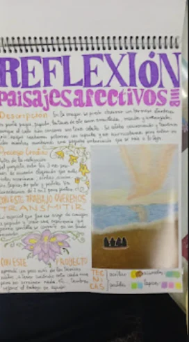
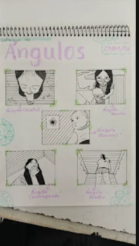
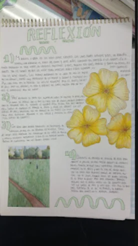

Artey educación.
Soy Rodrigo Uriví, artista visual y profesor. Este es un archivo de experiencias en el aula, procesos creativos y proyectos realizados junto a estudiantes.
Explorar proyectos


El trabajo en aula.
Ejercicios, ideas y procesos desarrollados a través de la imagen, el dibujo, la observación y la experimentación. Un registro visual de distintas maneras de aprender haciendo.
El aula se expone.
Muestras de obras de estudiantes: instancias para compartir procesos, construir un relato colectivo y llevar el trabajo del taller a otros espacios de la comunidad escolar.
Rodrigo
Uriví.
Artista visual, profesor de Artes Visuales y educador.
Soy artista visual y profesor de Artes Visuales, formado en la Pontificia Universidad Católica de Chile, donde obtuve mi Licenciatura en Arte y, posteriormente, mi título de Profesor de Educación Media en Artes Visuales.
Desde 2005 he trabajado en establecimientos educacionales de Santiago, combinando la enseñanza artística con experiencias vinculadas al arte digital, el video, los medios audiovisuales y la tecnología. Paralelamente, he desarrollado una práctica artística que incluye exposiciones en Chile y el extranjero.
Formación
- 2005Profesor de Educación Media en Artes Visuales
Pontificia Universidad Católica de Chile - 2005Licenciado en Educación
Pontificia Universidad Católica de Chile - 2002Licenciado en Arte
Pontificia Universidad Católica de Chile
Docencia seleccionada
- 2023—26Saint Gaspar College
- 2019—22Colegio Superior Cambridge
- 2015—18Colegio Monteverde Anexo
- 2012—14Santiago College
- 2006—11Colegio Camilo Ortúzar Montt
Práctica artística
Mi trayectoria incluye exposiciones en Chile y otros países, además de un proyecto FONDART adjudicado en 2009 para la creación, el diseño y la escritura del libro Ultimate Meleé Warrior Doom.
SELECCIÓN: VALPARAÍSO · SANTIAGO · BARCELONA · TOURS · MONTEVIDEO · TURÍN · BAT YAM